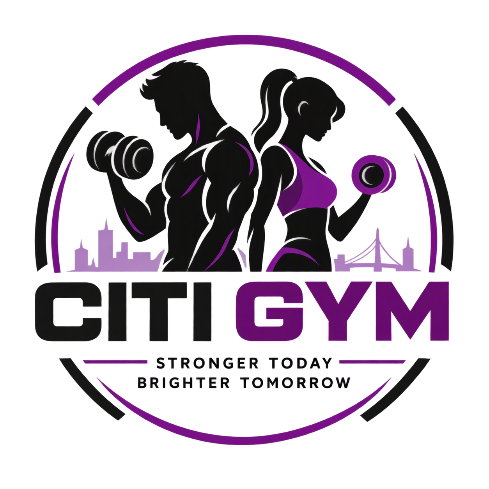

Welcome to Citi Gym
Citi Gym is a modern fitness facitity located on the Strand Road in Derry. We offer quality equipment, A wide range of fitness calsses and professional training support to help you reach your health and fitness goals.
Why Choose Citi Gym?
- Modern cardio and weight training equipment
- HIIT and spin bike calsses
- Strenght training classes
- Yoga and Pliates classes
- Personal training and fitness assessments
- Qualified and supportive staff
- A safe and inclusive fitness environment
Our Activities
Citi Gym provides a wide range of activities suitable for different fitness levels and personal goals.
Members can take part in HIIT, Spin, Weight Training, Yoga and Pilates classes, or use our cardio and weight training facitities independently.
Personal Training
Require additional support? Our training services include personal training programmes, fitness assessments and spacialist coaching
Our trainers can provide professional guidance and support to help our members work towards achieving their fitness goals.
Special Membership Offers
Thinking about joining Citi Gym? Contact our team to find out more about our current membership plans, facilities and fitness services.